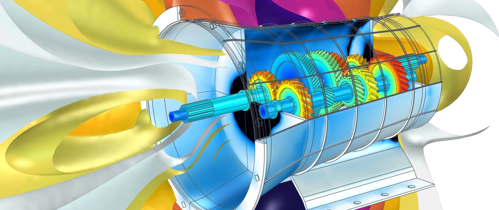
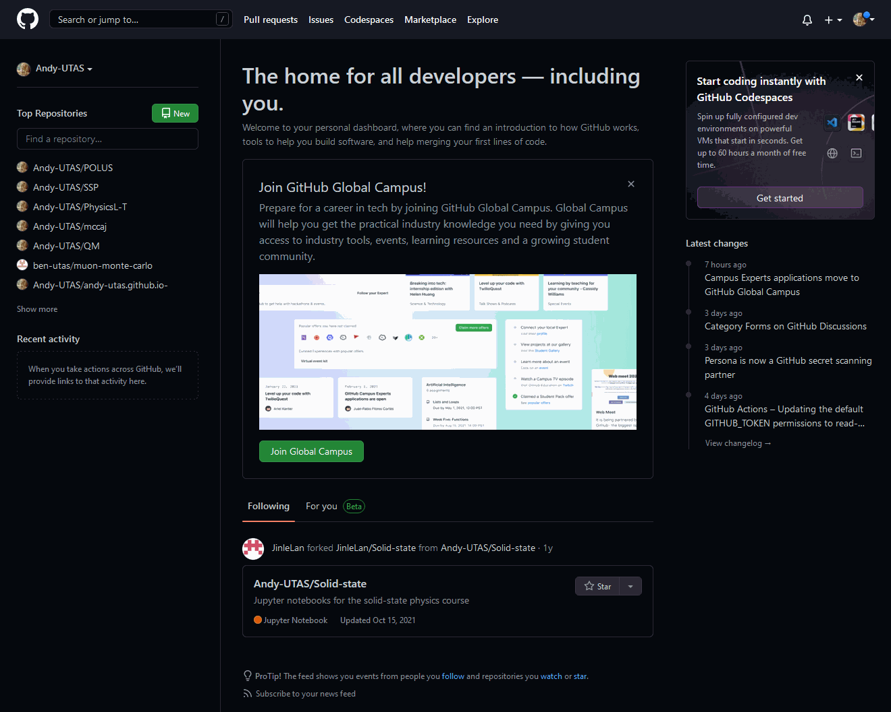

Version control (Git)¶
Have you ever been working on a project, and then realised that what was there previously was actually better? This may be due to making a mistake in your recent work, or you may have just been in the zone last time and only appreciated this after you had scrapped the work you did previously only to replace it with absolute junk and hit save. Or perhaps you are trying to work collaboratively with someone else, or many other people on complex projects which have many constituent parts - as is common in software development - and you are having difficulty knowing which files have been changed, and which parts of the file have been changed. Enter: version control.

Introduction¶
The undertaking of complex projects has always demanded that one fastidiously keep track of progress, and the growth of collaborative projects which are increasingly undertaken non-locally, that is, they are not undertaken at the same place or on the same device, has seen the development of excellent ways of not only tracking progress, but also distributing the progress of one member of a team to all other members of the team. The most common way to accomplish this is by using distributed version control, which essentially boils down to all files which within a project - including the history of all files - being mirrored on any device which is used to contribute to the project. Beyond this, there are clever means and standard protocols to ensure problems such as conflicting changes to files arising from simultaneous editing are handled and don't break the whole system. These methods of working are standard across all industries and once you start using them, you will see why.
Git¶
Perhaps unsurprisingly, there are quite a few options for distributed version control, but the largest by far is the free and open source software git.
git versus GitHub
You may have heard of one or both of git or GitHub, and it is important to know that these are distinct entities! We shall flesh out their relationship below, but do not make the mistake of thinking they are the same thing!
git-
is a revision control system, a tool to manage your source code history
Github-
is a hosting service for Git repositories
In a crude sense, git is the tool whilst GitHub is the service for projects that use git.
Navigate to the directory to
GitHub¶
https://github.com/
Creating a remote repository¶
